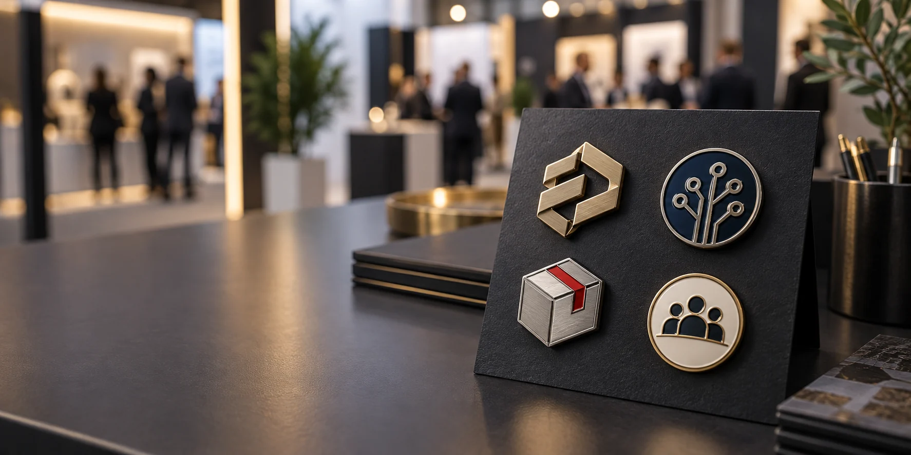

Pines e insignias metálicas personalizados preparados para un stand profesional.
El otoño concentra una parte importante de la actividad profesional en España. En Madrid se suceden las ferias de joyería, tecnología, fabricación, packaging y logística, mientras que Barcelona mantiene un calendario intenso de congresos y salones internacionales. Para las marcas expositoras, el merchandising para ferias es una herramienta de recuerdo, conversación y relación comercial, no solo un obsequio para llenar una bolsa.
Los calendarios oficiales de la Comunidad de Madrid incluyen citas como Madrid Joya, Guext, Madrid Tech Show, Advanced Manufacturing Madrid, Empack Madrid y Logistics & Automation Madrid entre septiembre y noviembre de 2026. La Asociación de Ferias Españolas también recoge eventos profesionales como FabCon Europe en Barcelona e IBTM World en noviembre. Consulta el calendario oficial de actividades feriales de Madrid, los eventos de octubre de la AFE y los eventos de noviembre.
En este contexto, un pin metálico bien planteado puede cumplir varias funciones: reforzar la identidad del stand, diferenciar a un equipo, premiar una conversación comercial, presentar una nueva colección o convertirse en un recuerdo que acompañe al visitante después del evento.
La tendencia: menos regalos genéricos y más piezas con significado
El merchandising B2B está evolucionando hacia productos útiles, reconocibles y alineados con la marca. En lugar de repartir el mismo artículo a todo el mundo, muchas empresas diseñan piezas específicas para clientes, colaboradores, empleados, prensa o visitantes cualificados. Esta orientación conecta el regalo con la experiencia del evento y con objetivos como la fidelización, el employer branding y la generación de contactos.
El análisis reciente de las tendencias de merchandising B2B en España destaca el uso de productos personalizados en eventos, onboarding, formación y acciones de pertenencia. Ver el análisis de tendencias de merchandising B2B. En la práctica, un pin o una insignia funciona mejor cuando responde a una pregunta concreta: ¿qué debe recordar la persona que lo recibe y cuándo volverá a verlo?
5 tendencias de merchandising para ferias en 2026
1. Piezas que identifican una comunidad o una edición
Un logotipo aislado puede ser correcto, pero no siempre cuenta una historia. En una feria profesional, el diseño puede incorporar un símbolo de la industria, una tecnología, una ciudad, una colección, una fecha o un concepto que el visitante asocie con la experiencia.
Algunas ideas que funcionan bien:
- un icono relacionado con el producto presentado;
- una serie de formas que represente las diferentes áreas de la empresa;
- una edición especial para el aniversario o el lanzamiento;
- un símbolo para distinguir al equipo de la marca;
- una insignia con el nombre de la feria y el año.
Esta lógica también permite repetir el formato en futuras ediciones. El dibujo puede cambiar cada año, pero el tamaño, el borde metálico o la paleta principal mantienen una identidad reconocible.
2. Colecciones pequeñas para aumentar la conversación en el stand
Un único pin puede ser un buen regalo. Una colección breve puede convertirse, además, en un motivo para visitar el stand, iniciar una conversación o volver en otro momento del evento.
Para una feria B2B, una colección de tres referencias podría organizarse así:
- Pieza abierta: disponible para visitantes y contactos generales.
- Pieza de campaña: vinculada a un producto, una demostración o una novedad.
- Pieza limitada: reservada para reuniones, clientes, partners o acciones especiales.
No hace falta producir una gran cantidad de diseños. Es más importante que las piezas compartan proporciones, acabados y lenguaje visual. Una colección coherente se percibe como una decisión de marca; varias piezas sin relación parecen sobrantes de campañas diferentes.
3. Relieve, esmalte y acabados premium para mejorar el recuerdo
En una mesa llena de folletos, el peso y la textura de una insignia metálica pueden ayudar a que el objeto destaque. El relieve permite jerarquizar un logotipo o un símbolo, mientras que el esmalte aporta color y facilita la asociación con la identidad visual de la empresa.
Como orientación general:
- Relieve 2D: adecuado para logotipos, nombres cortos, escudos y diseños con zonas planas.
- Relieve 3D: útil cuando una figura central necesita volumen y una presencia más escultórica.
- Esmalte blando: versátil para colores vivos y diseños con una textura perceptible.
- Esmalte duro: ofrece una superficie lisa y una presentación más cuidada para regalos corporativos.
- Impresión o resina: puede resolver ilustraciones, degradados o detalles que no funcionan bien con esmalte tradicional.
La elección no debe hacerse solo por estética. El tamaño final, el grosor de las líneas, el número de colores, el presupuesto y el uso del pin deben revisarse juntos. Nuestra guía sobre tendencias en insignias metálicas personalizadas explica cómo comparar relieve, color, cierre y presentación.
4. Packaging sencillo, informativo y fácil de transportar
La tarjeta o el empaque pueden hacer que un pin pase de ser un objeto promocional a convertirse en una pieza con contexto. Una tarjeta pequeña puede incluir el nombre de la campaña, la edición, una frase de marca o un código QR que lleve a una página de producto, una demo o un formulario de contacto.
Para planificar el packaging de una feria:
- utiliza una tarjeta con el tamaño suficiente para explicar la pieza;
- reduce capas que no protejan ni mejoren la presentación;
- separa los pedidos por equipo, día, cliente o tipo de visitante;
- especifica los materiales de la tarjeta, bolsa o caja;
- evita afirmaciones ambientales que no puedas demostrar.
El Reglamento europeo de envases y residuos de envases comenzó a aplicarse el 11 de agosto de 2026, por lo que conviene revisar materiales, etiquetado y gestión del packaging antes de producir una campaña. Consulta la información de la Comisión Europea sobre las nuevas reglas de envases.
5. Diseños específicos para cada tipo de relación
No todos los asistentes necesitan recibir lo mismo. Una pieza para un visitante general puede ser sencilla y fácil de llevar; una insignia para un partner o un cliente estratégico puede tener un acabado más especial; una pieza para el staff debe priorizar la legibilidad y la comodidad.
Cómo elegir el pin adecuado para una feria profesional
Antes de solicitar precio, define el papel que tendrá la pieza. Estas cinco preguntas ayudan a evitar decisiones contradictorias:
¿Se va a regalar, vender o utilizar como acreditación?
El mismo diseño no necesita las mismas especificaciones en los tres casos. Un producto de venta puede requerir una tarjeta atractiva y un acabado más elaborado. Una acreditación debe ser visible, resistente y cómoda. Un regalo para clientes puede necesitar una presentación más cuidada.
¿Se llevará en la solapa, la mochila, una gorra o un uniforme?
El lugar de uso influye en el tamaño, el peso y el cierre. Un pin ligero con cierre de mariposa puede funcionar para una solapa; una pieza más grande o destinada a una mochila puede necesitar doble poste, goma, imán o un broche más seguro. Puedes comparar opciones en nuestra guía de tipos de cierres para pines metálicos.
¿Se entenderá el diseño a primera vista?
En una feria, las personas ven muchos estímulos al mismo tiempo. Si el nombre de la empresa es largo, quizá convenga destacar el símbolo y dejar la información completa para la tarjeta. Revisa el diseño en el tamaño real y no solo en una pantalla grande.
¿Habrá uno o varios diseños?
Una serie puede aumentar el interés, pero también multiplica las decisiones de producción. Define qué elementos serán constantes: borde, acabado, tamaño, cierre y tarjeta. Después decide qué elemento cambia en cada referencia.
¿Cuál es la fecha fija de recepción?
El calendario debe incluir aprobación del arte, revisión técnica, muestra si procede, producción, packaging, transporte y recepción. Como guía de planificación, conviene empezar entre ocho y diez semanas antes del evento cuando hay varios diseños o packaging personalizado. Es una referencia de organización, no una promesa de plazo: la fecha real depende de la complejidad, la cantidad y las especificaciones del pedido.
Brief de compra: qué enviar al fabricante
Un brief completo facilita la comparación entre propuestas y reduce cambios posteriores. Incluye:
- Logotipo, ilustración o referencia visual, preferiblemente en AI, SVG, EPS o PDF.
- Número de diseños y cantidad de unidades por diseño.
- Medida aproximada, orientación y grosor deseado.
- Número de colores y técnica preferida.
- Acabado metálico: oro, níquel, cobre, latón, negro o acabado antiguo.
- Tipo de cierre y lugar donde se utilizará la pieza.
- Uso final: regalo, venta, acreditación, uniforme, premio o kit de bienvenida.
- Tarjeta, bolsa, caja, numeración o separación por lotes.
- Ciudad de entrega, fecha del evento y fecha límite de recepción.
Si todavía no tienes el arte final, comparte al menos una referencia visual, la cantidad aproximada, el tamaño deseado y el objetivo de la campaña. Con esa información se puede valorar si conviene un pin metálico personalizado para empresa, una insignia, una placa o una colección.
Tabla rápida: qué producto elegir
| Objetivo | Producto recomendado | Decisiones clave |
|---|---|---|
| Aumentar el tráfico del stand | Pin esmaltado con forma o símbolo propio | Diseño llamativo, cantidad amplia y entrega rápida |
| Presentar un producto nuevo | Pin o insignia de edición limitada | Relieve, acabado, tarjeta explicativa y serie corta |
| Reconocer a clientes o partners | Pin corporativo premium | Acabado metálico, esmalte duro, packaging y mensaje |
| Identificar al equipo | Insignia o placa de nombre | Legibilidad, peso, cierre y uso durante muchas horas |
| Reforzar employer branding | Colección para empleados | Símbolos internos, variantes por equipo y presentación |
| Crear una campaña coleccionable | Serie de tres a cinco diseños | Familia visual, numeración y control de inventario |
Errores frecuentes en el merchandising para ferias
Repartir el mismo producto a todo el mundo
No todos los contactos tienen el mismo valor ni la misma necesidad. Una distribución por niveles puede mejorar el control de inventario y hacer que la pieza limitada tenga un significado real.
Diseñar con demasiado texto
Los nombres largos, las fechas y los mensajes completos suelen perder legibilidad en piezas pequeñas. Deja la explicación para la tarjeta o la página de destino y reserva el metal para el símbolo principal.
Elegir el cierre al final
El cierre afecta al peso, a la comodidad y a la percepción de calidad. Debe definirse junto con la forma y el uso, no cuando el diseño ya está terminado.
No reservar unidades para después de la feria
Una parte de los contactos puede llegar después del evento: clientes que visitan la web, partners que reciben el kit por correo o empleados que no pudieron asistir. Reserva inventario para seguimiento, ventas y futuras reuniones.
Pedir una colección sin un sistema común
Si cada diseño tiene un tamaño, acabado y cierre diferente, la colección pierde coherencia y se complica la gestión. Define primero las reglas de la familia visual.
Preguntas frecuentes
¿Cuántos pines necesito para una feria?
Depende del tráfico previsto, del número de días, del tipo de visitante y de si la pieza se regala, se vende o se reserva para contactos cualificados. Calcula por separado las unidades para público general, clientes, equipo, partners y reposición.
¿Qué diferencia hay entre pines personalizados para ferias e insignias para congresos?
Los pines suelen ser piezas pequeñas de merchandising para solapa, mochila o colección. Las insignias pueden tener una función más identificativa y estar destinadas a staff, acceso, reconocimiento o representación corporativa. El uso final determina la medida, el peso y el cierre.
¿Puedo añadir un código QR al packaging?
Sí. Lo más práctico suele ser colocar el QR en la tarjeta y dejar la superficie metálica limpia. Antes de imprimir, comprueba el tamaño, el contraste y que la página de destino funcione correctamente en móvil.
¿Es mejor el esmalte blando o el esmalte duro?
El esmalte blando suele ser flexible para diseños coloridos y merchandising de distribución amplia. El esmalte duro crea una superficie lisa y una presentación más premium. La decisión depende del diseño, del uso y del presupuesto.
¿Cómo puedo pedir una cotización?
Envía el diseño o una referencia, la cantidad, el tamaño, el acabado, el cierre, el packaging y la fecha de entrega. Si aún no tienes todos los datos, comparte la información disponible y el objetivo del evento para recibir una orientación inicial. Solicita un presupuesto para tu proyecto.
Conclusión: convierte el recuerdo del stand en una relación de marca
El mejor merchandising para ferias no es el que más ocupa, sino el que sigue teniendo sentido cuando termina el evento. Un pin bien diseñado puede recordar una conversación, identificar una comunidad, presentar una innovación o abrir la puerta a una segunda visita.
Para otoño de 2026, la oportunidad está en planificar con tiempo y diseñar piezas específicas para cada relación: visitantes, clientes, partners, empleados y equipos. Define el objetivo, simplifica el mensaje, elige el acabado según el uso y prepara un packaging que ayude a contar la historia.
En Insignia Metálica podemos ayudarte a comparar pines metálicos, insignias, relieve, esmalte, cierres y packaging para tu próxima feria o congreso en España.